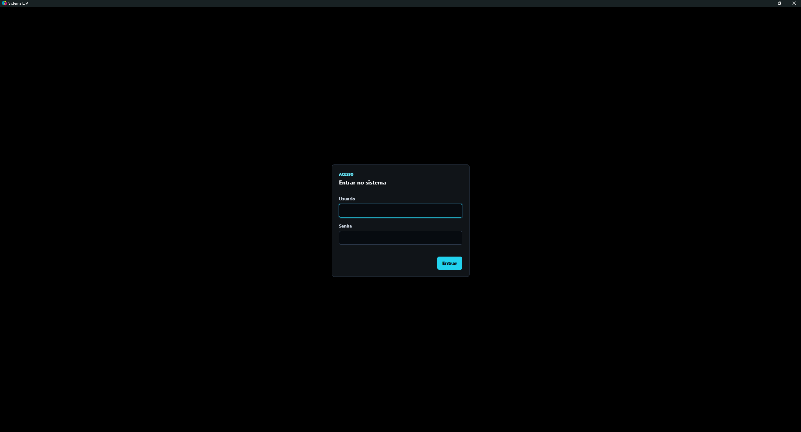
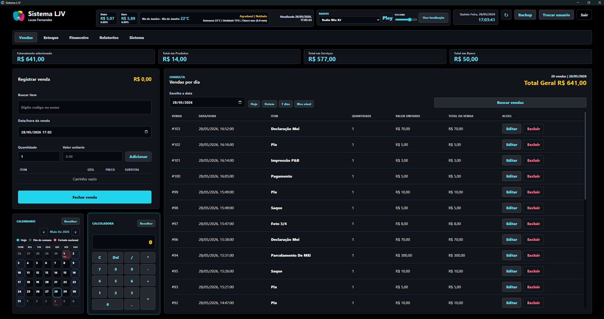
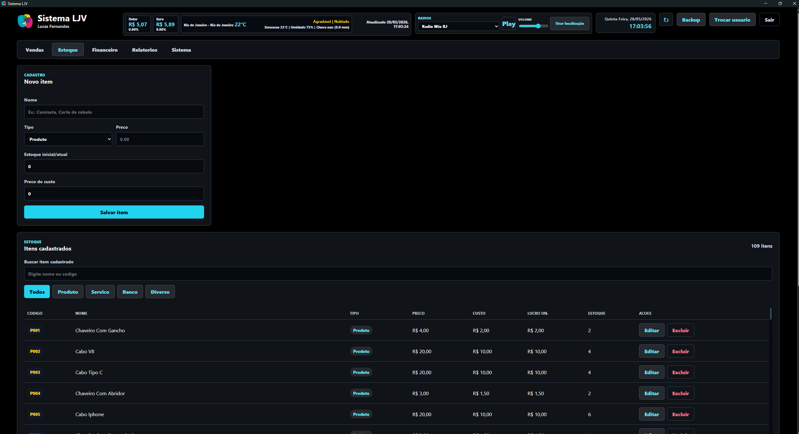
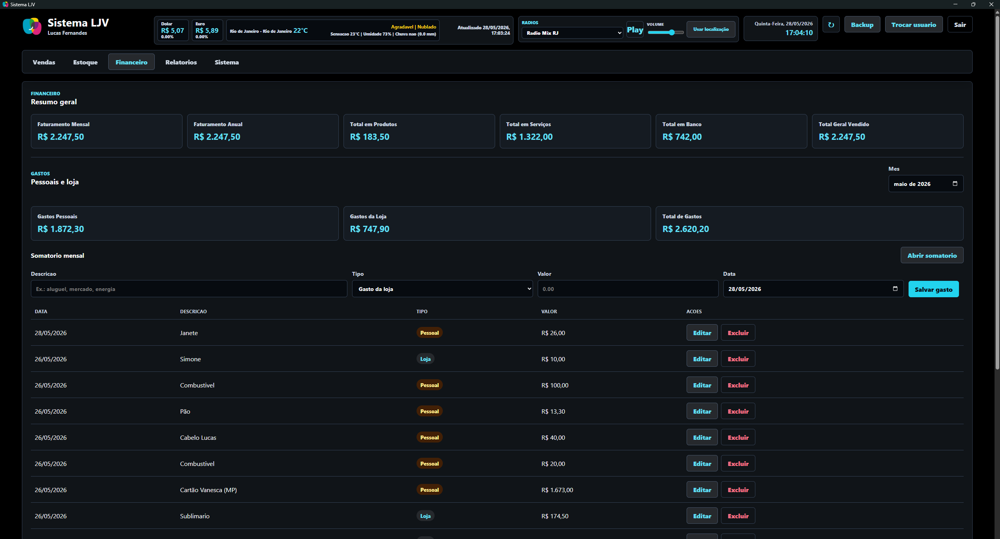
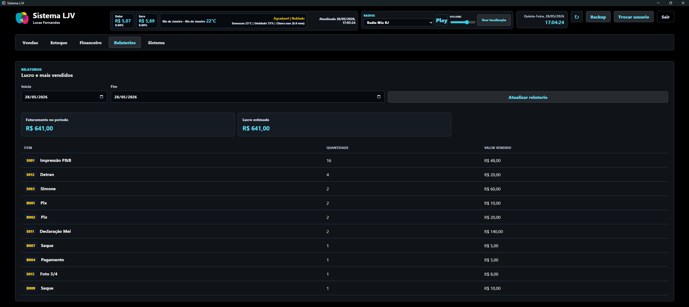
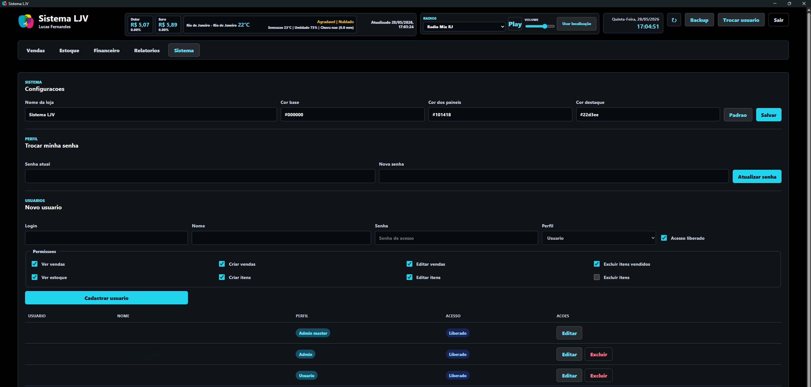

💻 Projeto: Sistema LJV
O Sistema LJV é um ecossistema ERP/PDV All-in-One voltado para a gestão comercial de pequenas e médias empresas, integrando Vendas, Estoque, Financeiro, Relatórios Analíticos e Controle de Acessos em uma arquitetura moderna, rápida e sem custo fixo de infraestrutura.
🚀 Visão Geral
Desenvolvido sob a premissa de alto desempenho, escalabilidade e custo zero de infraestrutura, o sistema utiliza uma arquitetura puramente Serverless e Edge Computing para entregar respostas rápidas e uma operação simples para o usuário final.
🛠️ Stack Tecnológica & Arquitetura
- Ambiente de Execução: Cloudflare Workers, garantindo Edge Computing com tempo de resposta global ultra-baixo.
- Banco de Dados: Cloudflare D1, banco relacional SQLite distribuído nativamente na Edge.
- Linguagem & Tipagem: TypeScript ponta a ponta para Backend e Frontend, com consistência estática de tipos.
- Roteamento & Validação: Hono Framework para HTTP leve e Zod para validação rigorosa de payloads.
- Bundling & Infra: Esbuild para artefatos otimizados e Wrangler para ambientes e migrations.
🎯 Destaques de Engenharia
- Precisão financeira: valores monetários persistidos em centavos, eliminando anomalias de arredondamento IEEE 754.
- Segurança defensiva: PBKDF2, validação em tempo constante, tokens em hash SHA-256 e Rate Limiting por IP e usuário.
- RBAC dinâmico: permissões granulares por módulo para acessar, criar, editar e excluir, com proteção do Admin Master.
- Auditoria: registro centralizado e imutável de ações sensíveis, como exclusões, resets e exportação de backups.
- DevOps local: scripts para smoke tests, verificação de banco com
db:verifye sincronização de produção para homologação.
📈 Resultados e Features de Negócio
- PDV fluído: busca instantânea de itens, carrinho virtual, calculadora integrada e calendário com finais de semana e feriados nacionais.
- Painel em tempo real: clima local, cotação de moedas estrangeiras e rádio online com controle de volume no cabeçalho da aplicação.
- Business Intelligence: cálculo de faturamento bruto e estimativa de lucro líquido por período.
- Customização em runtime: motor de micro-temas com cores salvas diretamente na tabela de configurações.
Ver telas do Sistema LJV





